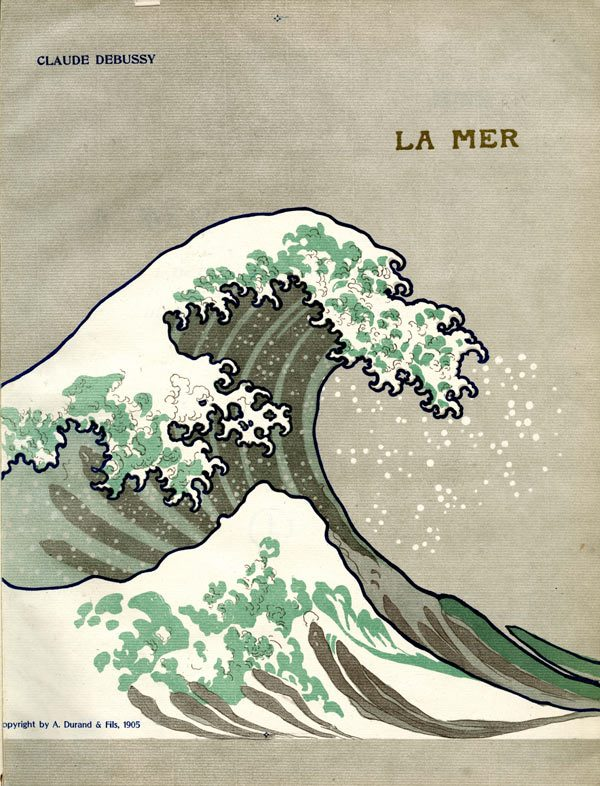
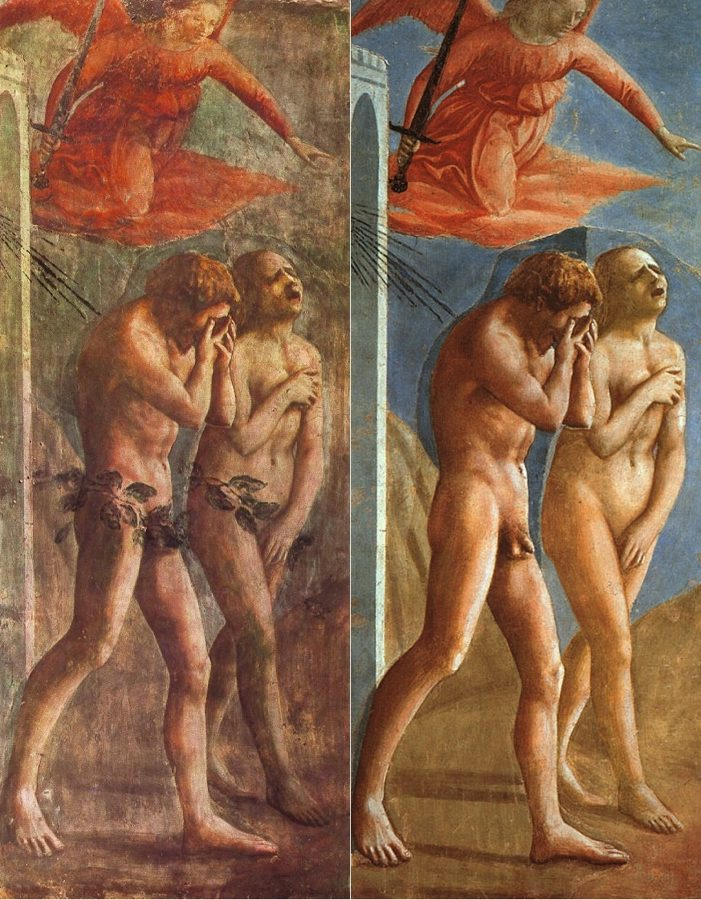

读之前
这一页是报告 11 的后半：5 月 11 日到 25 日，五条。查理白天还在唐纳面包店，其余时间在实验室和大学里。上一页留下两件没了结的事：Gimpy 少收钱的事怎么办，和 Alice 约好的那场音乐会。读的时候抓两条线：一条是查理怎么看身边的人（面包店的同事、大学的教授），他们又怎么看他；一条是他靠近 Alice 的时候，自己身上出现了什么，他怎么解释。
32 岁，3 月初做的手术。文字早已和常人一样，开始读大学的课程，下班后爱在大学里转、听学生争论；面包店的同事开始躲着他。他爱上了 Alice，她两次说「还不是时候」，只答应一起去中央公园听免费音乐会，不单独相处。他发现 Gimpy 少收熟客的钱、再分差价：Nemur 说别管，Strauss 说该告诉唐纳，Alice 说要他自己拿主意。
读的时候带着这几个问题。不用先找答案，读完回来对照「检查一下理解」。
查理最后怎样处理 Gimpy 的事？他自己觉得这个办法好在哪、缺在哪？§1
查理怎么评价大学里的学生和教授？他的评价你信几分？§2
留意查理每次靠近 Alice 时，身上先出现什么，他事后怎么解释。§3 §5
5 月 20 日每个开口的人，各自给的理由是什么？§4
分节地图
这一页有五条带日期的报告。读完一条打个勾；每条下面的英文是那一条开头的几个词，在 Kindle 里搜它就能跳过去。没读的那几行先模糊着，免得提前看到情节，点一下就能看清。
5 月 11 日约 500 词 After all this thinking and worrying, … 留意查理嘴里的「朋友」是谁，Gimpy 怎么接这个话。 5 月 15 日约 500 词 My studies are going well. The … 留意他问了哪几位教授、各问的是什么。 5 月 17 日约 1000 词 Almost morning and I can’t fall … 中央公园的音乐会。留意他身上的变化从哪一句开始。 5 月 20 日约 1600 词 I’ve been fired from my job … 留意每个人开口时给的理由，和这一条最后那个关于 Algernon 的问题。 5 月 25 日约 1300 词 So this is how a person … 留意屋里的摆设，和后半段「我」变成「他」的地方。
背景：书里默认你知道的事
按在书里出现的顺序排，标题前是节号。人名后面括号里是中译本的译名，读者想对照译本时用。
§1 这一页出场的人差不多都是老面孔。下面几张卡片只写你读到 5 月 10 日为止已经知道的。
Gimpy 金皮 面包师傅的头儿，一只脚畸形（club foot），走路一瘸一拐，有三个孩子。11a 里查理看见他少收几位熟客的钱，再把差价揣进自己兜里。
Mr. Donner 唐纳先生 店主。十七年前是查理的 Uncle Herman 把查理领来的，Herman 是他的好朋友。
Frank Reilly、Joe Carp 弗兰克·赖利、乔·卡普 作坊里的同事。报告 9 里查理在他们的派对上明白了大家一直在笑他。
Fanny Birden 范妮·比尔当 作坊里的女同事。
Alice Kinnian 艾丽斯·纪尼安 成人班的老师，手术后一直教查理。查理爱上了她。
Burt Selden 伯特 做测验的研究生。
§2 封锁、黑名单和 navicert查理想找经济学家谈的，是和平时期拿军事封锁当武器合不合道德。他点名的两样手段，都是两次世界大战里对付敌国贸易的办法。黑名单：把跟敌方做生意的商号列成名单，不许本国人和它们往来，一战时英国开了头，二战时美国也有自己的名单。navicert（navigation certificate，航运证明）：1916 年起，英国驻中立国的使领馆给货物开证明，说明不是禁运品，船遇到封锁的巡逻舰就能少受盘查；1939 年又用了起来。书里没说那些「现在和我们作对的小国」是哪几个。
§2 变分法、乔叟、特罗布里恩群岛这一条里查理的书单和问题跨得很开。变分法（calculus of variations）是数学的一支，找让某个量最大或最小的那条曲线、那个函数，比如两点之间哪条滑道让小球滑得最快。乔叟（Geoffrey Chaucer，约 1343–1400）是英国中世纪诗人，写了《坎特伯雷故事集》。特罗布里恩群岛（Trobriand Islands）在新几内亚岛以东，今天属巴布亚新几内亚；人类学家马林诺夫斯基（Bronisław Malinowski）1910 年代在那里做田野调查，写成了人类学的经典。
§3 中央公园的 Mall 和免费音乐会The Mall 是中央公园南半部一条两旁种满榆树的宽步道，南头一段叫「文学步道」，北头靠近 Bethesda 台阶的地方有一座露天音乐台。在这里听免费的露天古典音乐会，是纽约的老传统：银行家 Elkan Naumburg 1905 年起出钱办，1923 年又出资建了这座音乐台，乐迷就坐在台前的场地和草地上听。11a 里 Alice 说的「春季免费音乐会」，书里没说是哪个乐团办的。
中央公园 Mall 上的 Naumburg 音乐台，2019 年夏天拍的，台上没有演出。Epicgenius，CC BY-SA 4.0，维基共享资源
§3 德彪西的《大海》《大海》（La Mer）是法国作曲家德彪西（Claude Debussy，1862–1918）1905 年完成的管弦乐曲，三个乐章，他自己叫它「三首交响素描」。它不讲故事，听的主要是音色和织体的变化，常被归进「印象派」音乐（德彪西自己不喜欢这个标签）。1905 年 Durand 出版社印的总谱，封面用的是葛饰北斋《神奈川冲浪里》的一部分。

1905 年 Durand 版《大海》总谱的封面，巨浪取自北斋的版画。取自葛饰北斋《神奈川冲浪里》，公有领域，维基共享资源 §4 知识之树《圣经·创世记》第 2、3 章：上帝让亚当住在伊甸园，园中的果子都可以吃，只有「分别善恶的知识之树」上的不能吃，吃了必死。夏娃受蛇引诱吃了果子，又给亚当吃，两人眼睛就亮了，发现自己赤身露体，用无花果叶遮身。上帝把他们逐出伊甸园，在园子东边安设基路伯（天使）和发火焰的剑把守；人从此要劳苦，终要归于尘土。在基督教传统里，这就是「原罪」和「失乐园」的故事。

马萨乔（Masaccio）1420 年代在佛罗伦萨布兰卡奇礼拜堂画的《逐出伊甸园》。这幅壁画 1680 年被人加上了遮身的叶子，后来修复时去掉：左边是修复前，右边是修复后。Masaccio，公有领域，维基共享资源 §5 书里点名的六本杂志两张茶几，一张三本：The Reporter（1949–1968 年的时政双周刊）、The Saturday Review（文学和文化评论周刊）、The New Yorker（《纽约客》，小说、评论、漫画）。另一张三本：Mademoiselle（给年轻女性的时装杂志）、House Beautiful（家居装饰）、Reader’s Digest（《读者文摘》，把各处的文章压缩成口袋本，当时美国销量最大的杂志之一）。大致是一张知识界读的、一张大众和女性读的，书里一张桌子一组地写出来。
词与短语
三类：紫边的「查理拼的」是他拼错的词，先写还原的拼法；黄边的「每个字都认识」是熟词生义、俚语、别人话里的弦外之音；其余是这里用法特别的词。斜体小字是原句里的几个词，在 Kindle 里搜它就能找到原文，拼错的照拼错的抄。
§1 5 月 11 日
pocket (v.)
… customers and pocketing his portion of …
揣进自己兜里，私吞
pocket 作动词是「装进口袋」，多指把不该拿的钱拿走。his portion of the difference 是差价里归他的那一份：另一份让给了熟客。
start away
… up to him he started away.
（转身）要走开
start 在这里是「动身」，不是「吓一跳」。Gimpy 一见查理过来就想躲。§1 后面又有一次 Gimpy started away。译本：「他吓了一跳」。把 start 读成了吃惊；后面那一处译成「金皮开始走开」，两处没有统一。
inform
… like the idea of informing and …
告发，打小报告
inform 不带宾语、或说 inform on someone，是「向上头告发某人」，带贬义。不是「通知」。
stand by
… he won’t stand by and let …
袖手旁观
字面是「站在旁边」，常接 and let…：眼看着事情发生而不管。
keep one’s nose in one’s own business
… keep his nose in his own business,
少管闲事
Gimpy 把两个说法拧在了一起：keep one’s nose out of（别把鼻子伸进来）和 mind one’s own business（管好你自己的事）。nose 在这类说法里都指多管闲事。
club foot
… said Gimpy, shifting off his club foot.
畸形足（马蹄内翻足）
一种先天的足部畸形，脚往内下方扭着。shift off 是把身体的重心从这只脚上挪开。
know who one’s friends are
… and know who his friends are.
认清谁是自己人
原文 his 是斜体，重读：要分清你那边的人是谁。话里有话：工友是一边，老板是另一边。
stick together
… working people got to stick together.
（干活的人）要抱团，互相护着
got to 是口语，省了 have。Gimpy 把一件私吞的事说成了工人和老板之间的事。
a cut
… maybe he’s interested in a cut?
一份分成，抽头
cut 作名词是「切下来的一份」，俚语里指分赃、回扣。Gimpy 猜查理是想入伙分钱。
stick one’s nose in
… sorry you stuck your nose in.
插手别人的事
和前面那句 keep his nose in his own business 是一回事，这回 Gimpy 不再说「你的朋友」，直接说「你」。
have one’s head examined
… I should of had my head examined.
（我）真是脑子有病
字面是「该去检查一下脑袋」，意思是自己当初糊涂。should of 是 should’ve 的口语读音照写下来，查理记的是 Gimpy 的原话，不是他自己拼错。
something to be said for it
… has something to be said for it.
（这样做）也有它的好处
固定说法，后面通常跟着说好处在哪。查理紧接着就说了：事情了结了。译本：「还得费番口舌」。把它读成了还要多费口舌，和下一句说事情了结了意思接不上。
over and done with
… It’s over and done with.
完全了结了
over 和 done with 意思相同，叠在一起加重语气。这是查理的判断：书里没有写 Gimpy 后来是不是真的收手了。
§2 5 月 15 日
calculus of variations
… newer works on the calculus of variations,
变分法
数学的一支，见「背景」。calculus 单用多指微积分。
hang together
… things, apparently disconnected, hang together.
（彼此）连得上，合成一体
不是「一起吊着」。说一套说法、一堆事物内在一致、互相照应。
plateau
… moved up to another plateau, and …
（又一层）高台
报告 9 里这是 Miss Kinnian 给查理的新词，他当时还要解释一句「像山顶的平地」。现在他自己顺手用上了，而且是 another plateau：又上了一层。
faculty cafeteria
… professor at the faculty cafeteria, one …
教职员餐厅
faculty 在美国大学里指全体教师。前一段的 college cafeteria 是学生吃饭的地方：查理两边都去，两边都觉得不对劲。
navicert
… reinforcement of the navicert controls that …
（战时的）航运证明制度
navigation certificate 的缩写。同一句里的 blacklisting 是把商号列入黑名单。两样都见「背景」。
interest / interest rates
… His interest was in interest rates,
他的兴趣在利率上
同一个 interest，前一个是「兴趣」，后一个是「利息」。这句话里藏着一个文字游戏：这位教授的兴趣窄到只剩利率。
slip away
… find excuses to slip away, afraid …
溜走
slip 是「悄悄地、不引人注意地」走开。
Orientalist
… questioned an Orientalist about the Trobriand Islanders,
东方学家（研究亚洲、中东的语言和历史的学者）
特罗布里恩群岛见「背景」。研究那里的人，通常是人类学家的事。
automation
… problems of automation-caused unemployment with …
自动化（引起的失业）
1950–60 年代美国工厂大量用上自动化设备，机器会不会抢走工作是当时的热门话题。
§3 5 月 17 日
the Mall
… The Mall at Central Park had …
（中央公园里的）林荫大道
不是购物中心。见「背景」。
pick one’s way
… had to pick our way among …
小心地找地方下脚
pick 是「挑」，挑着落脚的地方走。草地上躺满了一对一对的人。
protesting (laughter)
… was the protesting female laughter and …
（女人）一边推拒一边笑
protesting 是「嘴上抗议的」。黑暗里看不见人，只听见女人半推半就的笑声、看见烟头的亮点。这一句先把草地上的气氛交代了。
right on top of
… be right on top of the orchestra.
紧挨着（乐队）
on top of 在这里是「贴得很近」，不是「在上面」。Alice 的话：不必挤到乐队跟前去。
stimulus-and-reaction
… the pattern of stimulus-and-reaction that caused …
刺激—反应
行为主义心理学的基本说法：一个刺激引出一个反应。查理想用这套术语把自己手心出汗、胸口发紧解释清楚，结果没用。
choke (out)
“Here,” I choked, “why don’t …
哽着嗓子（说）
choke 是「噎住、喘不过气」，作说话的动词，是紧张得声音发紧、勉强挤出话来。§5 还有一次 I managed to choke out。
make love to
… me to make love to her body …
（和她的身体）亲近、亲热
老派英语里 make love 是「求爱、献殷勤」，后来多指性事；这里说 her body，指的是身体上的亲近。这一整串「她在假装……她想要……」都是查理当时的揣测，不是 Alice 说出来的。
switch in perception
A sharp switch in perception.
知觉一下子转换
perception 是心理学的「知觉」。下一句就是转换后的样子：他像是从树后的黑暗里，看着草地上的两个人。
be exposed
… open and he was exposed.
露出了下身
expose 本义是「暴露」；说一个人 exposed、exposing himself / herself，就是露出私处。§5 也用了这个词。
catch hold of oneself
… then I caught hold of myself …
稳住自己，回过神来
和 get hold of oneself 同义。§5 Alice 对他说的 Get hold of yourself 是同一个意思。
cave in
… building before everything caved in.
（一切）塌下来
本义是房顶、矿井塌陷。这里是比方：他觉得再待下去就要撑不住、昏过去。
sexually retarded
… I’m still an adolescent—sexually retarded.
性心理发育迟滞
retarded 是当时对智力障碍的常用说法，今天是冒犯的词。这一段先转述 Strauss 的看法（Dr. Strauss feels…），sexually retarded 是查理接受这个看法后给自己下的结论，用在性和情感的发育上：还停在青春期。
§4 5 月 20 日
hang on to
… to hang on to the past,
紧抓着不放
hang on 是「抓牢」，加 to 接抓着的东西。
roll-top desk
… chair beside his roll-top desk,
卷帘盖书桌
桌面上方有一道木条拼成的卷帘，拉下来就把格子和文件都盖住。19 世纪末到 20 世纪中，美国办公室里常见。
as good a time as any
… is as good a time as any.”
现在说也好（反正迟早要说）
字面是「和别的时候一样好」。开口说难办的事之前常用的一句，意思是一直拖着没说。
both of me
… as if both of me, the …
两个我
英语里 me 本来没有「两个」，查理故意这样说：旧的查理和新的查理挤在同一把椅子上。
want for
… you didn’t ever want for a dollar …
缺少
want 的老用法是「缺」，want for 多用在否定句里：不愁……。不是「想要」。
put away
… without being put away in that home.”
（把人）送进收容机构关起来
put away 本义是「收起来」，说人时是委婉地说关进精神病院、监狱、收容所。that home 就是 Warren 之家。§5 里也有人说 put you away。
give up one’s life for one’s country
… own son who gave up his life …
为国捐躯
前面几篇没提过 Donner 有个儿子死在战场上。书里没说是哪一场战争。
commit
… When they committed you to that …
（依法）送进（收容机构）
commit someone to 是正式说法，经法庭或医生签字把人送进精神病院、收容所。报告 7 里 Donner 说的 had you comited to the Warren home 是同一件事。
let someone go
… Charlie, I got to let you go.”
辞退（某人）
字面是「放你走」，是老板解雇人时的委婉说法。
delegation
There was a delegation in to see …
（推出来的）代表
一群人推几个人当代表去见上头。下文还提到 petition（请愿书、联名信）。
stick up for
… and I’d stick up for you …
替（某人）撑腰、说话
和 §1 Gimpy 说的 I always stood up for you 意思差不多。
ladies’ man
… the fast talker, the ladies’ man,
讨女人喜欢的人，情场老手
同一串里的 fast talker 是嘴快、能说会道的人，arranger 是张罗事、拉关系的人。这是查理对 Frank 的三个评语。
a brain
… a know-it-all, a brain! Now …
（讽刺）大聪明
brain 作可数名词指「聪明人、才子」，从 Frank 嘴里说出来是挖苦。前面的 big shot（大人物）、know-it-all（自以为什么都懂的人）都一样。
a regular whiz kid
… a regular whiz kid, an egghead.
十足的神童
regular 在口语里是「十足的、地道的」，不是「正常的」。whiz kid 是少年天才，egghead 是带嘲弄的「书呆子、知识分子」（光秃的大脑门像蛋）。译本：「正常的神童」。regular 取了字面义；后面的 egghead 译成「一个受过教育的人」，挖苦的味道也没了。
Mister Gordon
… tell you what you did, Mister Gordon.
（讽刺）戈登先生
原文 Mister 是斜体，重读：一起干了十几年活，突然改口叫「先生」，是在挖苦。
moron
… To me you’re still a moron.
（旧称）低能者；骂人的「白痴」
1910 年美国心理学家 Goddard 造的词，当时是智力障碍分级里的一级，后来变成骂人话，今天不能这样称呼人。§4 稍后查理自己也用了 the moron，是站在同事的角度说的。
You got a nerve
“You got a nerve,” he shouted.
你脸皮真厚
have a nerve 是「好大的胆子、不害臊」，不是「有神经」。got 前面口语省了 have。
at someone’s expense
… appear clever at my expense, but …
拿某人取乐，踩着某人
expense 本义是费用：显得聪明的代价由查理来付。
Which don’t mean to say
“Which don’t mean to say,” she remarked,
这可不是说……
Fanny 的口语，语法不标准：which 承接前面的话，don’t 该是 doesn’t。她后面的 you done、you was、they was 也是这样，书里用这些写出她的出身和口音。
mighty (adv.)
… there’s something mighty strange about you,
非常，很
mighty 作副词是美国口语，偏乡下、老派，等于 very。
(something) with the devil
… you know, like with the devil …
（和魔鬼）做了交易
Fanny 没说完的半句：拿灵魂和魔鬼换本事，是浮士德一类故事的老套路。
tree of knowledge
… ate from the tree of knowledge.
知识之树
见「背景」。原文这几个词是斜体，表示 Fanny 加重了语气。
in God’s name
… What in God’s name did they want …
（加强语气）到底
插在疑问词后面，表示气急、想不通，和 what on earth 一样。译本：「他们假上帝之名」。读成了他们借上帝的名义；原文只是查理在问：他们到底要我怎样？
drive a wedge between
… has driven a wedge between me …
离间，在……之间造成裂痕
wedge 是楔子，打进木头里把它劈开。
§5 5 月 25 日
throw-pillow
… the throw-pillows on the sofa hadn’t …
（沙发上的）靠垫
throw-pillow 本是随手扔在沙发上的小靠垫，查理接着说它们 hadn’t been thrown at all：一个都没「扔」，全都等距摆好。拿词的字面开了个玩笑。译本：「沙发上的靠枕不是随意乱摆」。意思传过去了，字面上的那个玩笑没法带过去。
upholstery
… covers that protected the upholstery.
（沙发的）软包面料
给沙发套上透明塑料套，免得面料磨损、弄脏，是 1950–60 年代美国不少人家的做法。
courtier
… a dashing Renaissance courtier, masked,
朝臣，宫廷侍臣
dashing 是「英武潇洒的」。对面墙上那幅毕加索的《母与子》，毕加索同名的画有好几幅，书里没说是哪一幅。
take it hard
… You mustn’t take it so hard,
太往心里去，太难过
hard 在这里是「沉重地」承受。
symbolic repetition
… become a symbolic repetition of …
象征性的重演
精神分析的说法：眼前的事在象征的意义上，把小时候的经历又演了一遍。查理下一句就打断了她。
a nice neat label
… giving it a nice neat label.
一个好听又整齐的标签
label 是给东西贴的标签，查理是在挖苦术语。neat 这个词前面刚用来写过 Alice 的屋子：Everything was neat。
be strapped
… Afraid of being strapped for not …
挨皮带抽
strap 是皮带，作动词有两个意思：用带子绑住，或用皮带抽打。这里是「因为不让着 Norma」受的罚，本站读作挨打。报告 7 手术时 straped my arms and legs down 用的是「绑住」那个意思。译本：「被绑起来」。取了绑的意思，也说得通；这里讲的是受罚，本站读作挨抽。
Get hold of yourself.
“Get hold of yourself.”
镇定点。
叫人别慌、稳住情绪。
diving raft
… forced off a diving raft and …
（湖里、海边的）跳水浮台
固定在离岸不远的水面上的木头平台，游泳的人爬上去歇脚、往下跳。Alice 的比方：刚学会游泳的人被推下浮台，脚下没了实木。
that happened in his pants
… whenever that happened in his pants …
（委婉）他勃起的时候
委婉的说法，字面是「裤子里出了那种事」，指勃起。
make one’s mind a blank
… could make my mind a blank.
让脑子一片空白
blank 是空白。他想抢在惊慌到来之前，什么都不想。
查理的文字
拼写、标点早就和常人一样，曲线上要看的是「长词」和「句长」。5 月 15 日写大学里的读书和教授，长词冲到 9%，是到这一页为止全书最高的一条，平均句长也拉到 18 词：etymologies、specialization、automation-caused，他在用学者的腔调写字。两天后写音乐会，句长掉到 9 词：短句、对话、省略号（buzzing in my ears ... an electric saw ... far away），慌的时候字也碎了。§4、§5 的标点（逗号、分号、冒号、破折号）每百词升到 7 上下，是这一页最多的两条：对话多，破折号常用在抢话和话说一半的地方。
5 月 25 日那段回忆又从「我」换成了「他」，像报告 9 里看见十五岁的自己那样；写到母亲举起皮带时，还换成了现在时（the belt swishes past），像那一幕就在眼前。写完他回到「我」：I still hear her。可以和 §4 那句「两个我」坐在同一把椅子上对照着读。
记忆拼图
查理的童年是一段一段想起来的。每段一张卡片：想起了什么，是被眼前的什么勾起来的。年纪是从书里推的，推不出来的写「年纪不详」。读过的页的卡片会汇总到记忆拼图 ，按年纪排好。
三样真实的害怕 因为不肯让着 Norma 受罚挨皮带（strapped，见词条）；不敢走过 Howells 街，那里的一帮孩子总捉弄他、推搡他；Libby 老师把他的手绑起来，不让他摆弄桌上的东西。Alice 说害怕是正常的反应，他说那些害怕是真的、有来由的，被赶出面包店的害怕却说不清。
§5 送货时开门的女人 在面包店送货时，一个刚洗完澡的中年女人取乐似的敞开浴袍给他看。他吓得呜咽、差点昏倒，她赶紧裹上浴袍，给他两毛五让他忘了这事，说只是试试他是不是好孩子。是 Alice 抱着他、他在等惊慌来的时候想起的。
§5 母亲的皮带 母亲 Rose 举着皮带要抽他，父亲拦着：「够了，你会打死他的。」起因是 Norma 的一个女伴来家里，他有了生理反应。父亲说这是正常的；母亲说他再敢碰女孩，就把他像动物一样关进笼子一辈子。紧接着上一段回忆想起来的。
§5
现在 写作「我」
回忆 写作「他」
更早 现在时
Alice 抱着他 他在等惊慌
送货时的女人 「妈妈会打他」
母亲的皮带 父亲拦着
「我自由了吗？」 嗡嗡声、发冷、恶心
本站示意图：5 月 25 日那一晚，从现在掉进两层回忆，再回到现在。回忆那一段查理用第三人称写自己。 值得停下来的句子
I’m like an animal who’s been locked out of his nice, safe cage.— §5，5 月 25 日，在 Alice 的屋里。本站译：我像一只被锁在舒服、安全的笼子外面的动物。
笼子在这一页出现了三次。5 月 20 日的报告结尾，他想：把 Algernon 放回大笼子，别的老鼠会不会和它作对？5 月 25 日他说自己被锁在笼子外面，前后说的都是被赶出面包店，那个「舒服、安全」的笼子指的就是那十七年。几段之后，回忆里的母亲威胁要把他像动物一样关进笼子一辈子。同一个词，一次是想回去的地方，一次是吓唬孩子的刑罚。
But in my dream it was the maiden who held the sword.— §5，5 月 25 日，这一页的最后一句。本站译：可在我的梦里，握着剑的是那位少女。
梦里换掉的只是一样东西：剑从朝臣手里到了少女手里。画是他进门时挑剔过的那幅，墙对面是《母与子》，他说这屋子像主人拿不定主意要住在哪个世界。这一页里拿剑、拿皮带的是谁，读者可以自己对一对。梦是什么意思，查理没解释，本站也不替他解释。
Alice 的客厅（俯视）
沙发上方的画
戴面具的朝臣持剑
护着受惊的少女
对面墙：《母与子》
↕ 两幅画正对着
查理的梦
还是那位朝臣和少女
剑在少女手里
查理：放在一起不对劲，像她拿不定主意自己是谁、要住在哪个世界
本站示意图：按书里的描写画的位置关系，不是原画。两幅画的样子书里只说了这些。 读完想一想
1. Gimpy 的事，Nemur 说别管，Strauss 说告诉唐纳，查理选了第三条路：只警告 Gimpy。他自己也说不知道这样对不对。换了你，会怎么做？
本站的看法 本站觉得这个折中有它的道理，也有它的代价。查理看到了常客也是同谋，开除 Gimpy 一个人像是让他替所有人顶罪；他也顾到 Gimpy 的三个孩子和那只脚。代价是唐纳一直不知道，查理只能相信事情「了结了」，书里没写 Gimpy 是否真的收手。还有一层：Gimpy 当面没认，转身就恨上了他。查理最后问的「还有多少人像 Gimpy 这样利用别人」，比他怎么选更值得想。
2. 查理说，以前他们因为他笨而笑他，现在因为他懂得多而恨他。Fanny 搬出知识之树，说人不该知道上帝没给的东西；查理说自己像天生的盲人见了光。你站在哪一边？
本站的看法 两人说的不是一回事。查理在讲权利：想变聪明没有错。Fanny 在讲代价：亚当夏娃吃了果子，先知道的是赤身露体和羞耻。这一页恰好两样都写了：查理多懂了很多，也是在这一页里被羞耻和惊慌困住。1959 年的中篇里就有 Fanny 这段话，那时是塑料盒工厂；长篇搬到面包店，添了唐纳对 Herman 的承诺，Fanny 的话里也多了「欲望和羞耻」。
3. 音乐会那晚的惊慌，Strauss 的解释是查理情感上还停在青春期。读完 5 月 25 日那段回忆，你觉得这个解释够不够？
本站的看法 本站觉得不够具体。「情感上还是少年」说的是一个阶段，5 月 25 日的回忆给的是一个来源：只要对女孩有了念头，就挨皮带，还被威胁关进笼子。查理自己也把两者连上了：他说还听得见母亲的声音，又问「我自由了吗」。可是知道了来源，惊慌还是照样来了。书里没有让「想起来」等于「治好了」。
对照今天
成立 后来的事实印证了这个说法部分成立 一部分对，一部分被后来的事改了被改写 后来的事实推翻了它，或者完全变了样书里的说法：像查理这样的人，没有人担保、没有工作，就会被送进州立之家关起来（Donner，§4）
书里 Donner 说，他答应过 Herman 让查理一直有活干、有地方住，不用被关进「那个之家」；查理被送去 Warren 时，是他出面说查理给他干活、由他照管。
当时 美国州立智障收容机构里住的人，1967 年到了最高点，约 19.5 万，其中差不多一半是孩子。把人送进去、一住几十年，是当时常见的安排。
今天 几十年的「去机构化」之后，2021 年住在州立大型（16 人以上）机构里的成年智力和发育障碍者约 1.5 万人，不到这类成年人的 1%（1967 年这个比例约为 29%）。1999 年美国最高法院在 Olmstead 案里判定，没有必要的隔离收容属于对残障者的歧视；政策的方向是住在社区、在普通单位就业。核对于 2026-10。依据：明尼苏达大学 RISP 项目的统计（1967–2021），美国最高法院 Olmstead v. L.C.（1999）。
书里的说法：接近女人、想到性，会引起焦虑、惊慌，甚至幻觉，因为查理情感上还停在青春期（Strauss，查理在 §3 转述）
书里 音乐会上，查理先是耳朵里嗡嗡响，接着发冷、手脚刺痒发麻，觉得有人在看，视角一下子跳到树后；后来反胃、像要昏倒。他事后认定看到的男孩是幻觉。
当时 1960 年代美国精神医学受精神分析影响很大，焦虑和惊慌多从童年的冲突、被压下去的欲望去解释。
今天 症状这一半对得上：美国精神医学学会 DSM-5 列的惊恐发作（panic attack）十三项症状里有发冷、麻木刺痛、恶心、头晕要昏倒、出汗、胸口发紧，还有「不真实感、像在一旁看着自己」；耳鸣被列为可以出现、但不算数的症状。看见一个不在场的人，不在这张单子上。解释这一半变了：今天常用认知行为的说法，把身体感觉当成灾难的信号，越怕越重，也重视创伤经历留下的触发点，不再说成「情感还在青春期」。核对于 2026-10。依据：美国精神医学学会 DSM-5（2013）惊恐发作的标准，Clark《惊恐的认知取向》（1986）。
检查一下理解
先在心里答，再点开。答错的那题，回书里把对应那一条再读一遍。
1.（§1）查理对 Gimpy 说的那个「朋友」是谁？Gimpy 最后反问了什么？ 「朋友」就是查理自己，Gimpy 最后那句「你会后悔多管闲事」说明他听出来了。Gimpy 先劝「朋友」少管闲事，最后问这位朋友是不是想分一份；查理说只想让这事停下来。Gimpy 撂下狠话，一瘸一拐地走了。
2.（§2）那位经济学教授为什么没有回答查理的问题？ 他说这不在他的专业范围里：他只研究利率，没怎么想过军事经济学。他推荐查理去找写过二战战时贸易协定论文的 Dr. Wessey，然后说要去准备讲课的笔记，握了握手就走了。
3.（§3）音乐会上 Alice 看见那个男孩了吗？查理后来怎么认定？ 她说没看见任何人，后来又说太暗了。查理第二天凌晨写报告时，认定那是幻觉，并转述 Strauss 的解释：他情感上还停在青春期，靠近女人、想到性就会引起焦虑、惊慌，甚至幻觉。
4.（§4）Donner 为什么让查理走？面包店里谁没有在请愿书上签名？ 同事们一次次来找 Donner，前一晚还派了代表，大家都怕查理；Donner 说他得顾着生意和自己的家。他还说查理已经不需要这份工作了。只有 Fanny Birden 顶住压力和威胁，没签名。
5.（§4）Donner 说的「庄严的承诺」是什么？ 他答应过好朋友 Herman，好年景坏年景都让查理有活干，兜里有钱、有地方住，不被关进那个收容之家。查理被送去 Warren 时，是他出面担保、给查理找了房间，查理一晚上也没在那里住过。
6.（§5）回忆里母亲为什么拿皮带打他？父亲说了什么？ 妹妹 Norma 的一个女伴来家里，查理对她有了生理反应，母亲说他读不会书、却懂得那样看女孩。父亲拦着她，说他控制不了，这是正常的，他什么也没做。
用一句话说这一页：
精彩回顾
隔几周回来，先看这几张卡片。想不起来的那张，点节号回到这一页，再回书里那一条。
一句话： 查理丢了面包店这个家，靠近 Alice 时，小时候的皮带和笼子先一步赶到。
「我有个朋友……」 查理借一个「朋友」的口警告 Gimpy：不停手就全说出去。Gimpy 捏着拳头听完，问他是不是想分一份，临走撂下一句「你会后悔的」。
§1 他的兴趣在利率上 查理去和教授们谈封锁、乔叟、特罗布里恩群岛，一个个都找借口走开。他的结论：教授也是凡人，怕被人看出知识窄；Alice 也是凡人，不是女神。
§2 树后面的男孩 《大海》的乐声里，他想抱 Alice，耳朵嗡嗡响、浑身发冷，看见一个十五六岁的男孩蹲在旁边看。Alice 什么也没看见。他追进黑暗，没找到人。
§3 两个查理坐一把椅子 唐纳先生的小办公室里，老查理和新查理一起等着听那句话。十七年前的承诺守住了，代表团和请愿书也到了。只有 Fanny 没签名。
§4 知识之树 Fanny 一边装饰结婚蛋糕上的新郎新娘，一边低声说亚当夏娃吃了果子、看见自己赤身露体，于是被赶出乐园。
§4 剑在少女手里 雨夜去了 Alice 家。她抱着他，他想起母亲的皮带；惊慌又来了，他在她怀里哭着睡着，梦见墙上那幅画，握剑的换成了少女。
§5